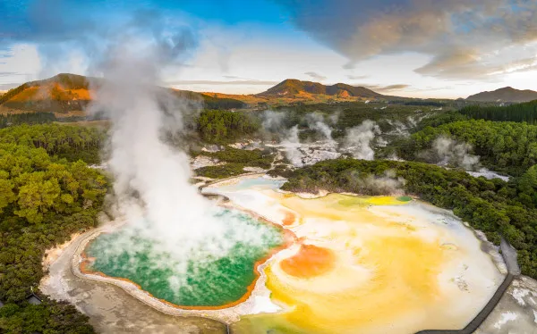
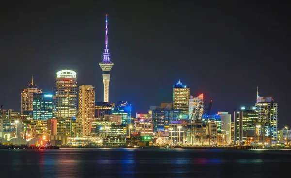

Tourism in New Zealand
The country receives more than two million foreign visitors every year, most of whom come from Australia, the United States and the United Kingdom. The New Zealand territory has many natural beauties that draw the attention of tourists, especially when considering the individuality of its fauna and flora.

Fiordland National Park
Where there are landforms sculpted by the action of glaciers, the so-called fjords.

Rotorua
A set of geysers, naturally heated lakes, volcanic craters and pools of hot mud situated in a region known for its high degree of geothermal energy.

Auckland
the most visited city in New Zealand. It is home to many cultural activities (such as cinemas, theaters, museums, and even movie locations) as well as outdoor tours.